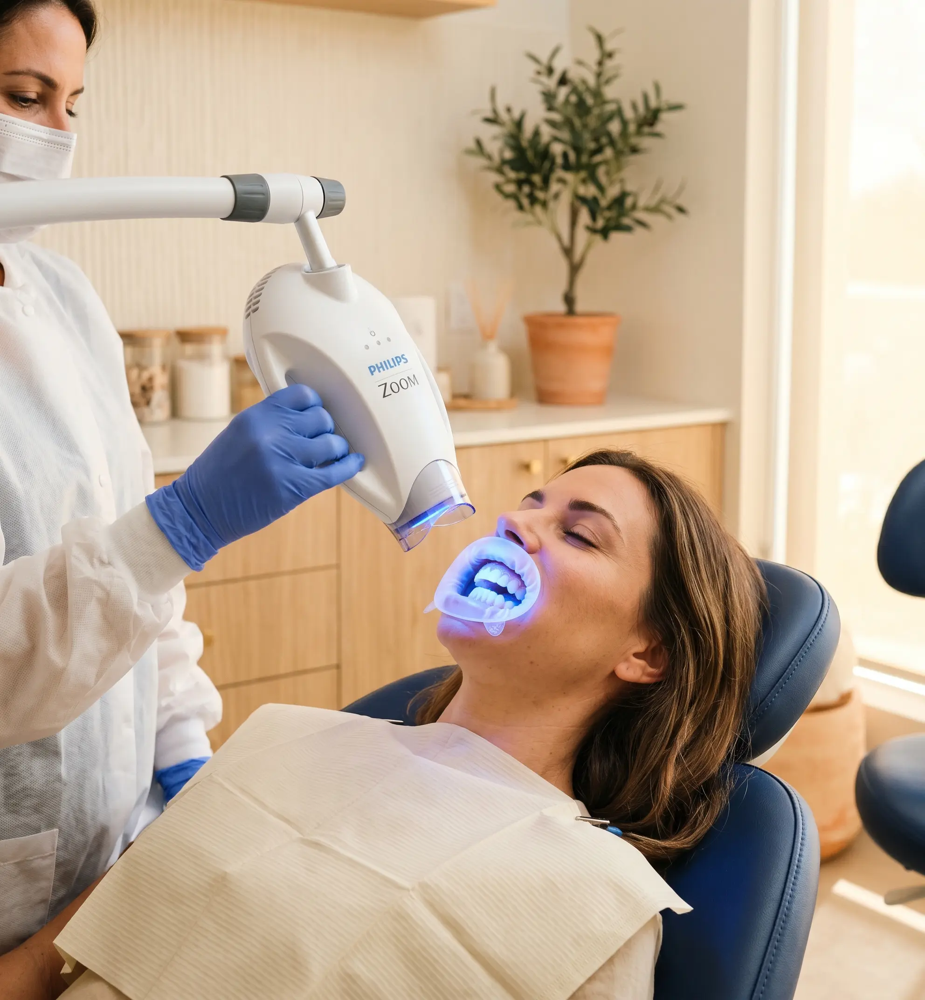
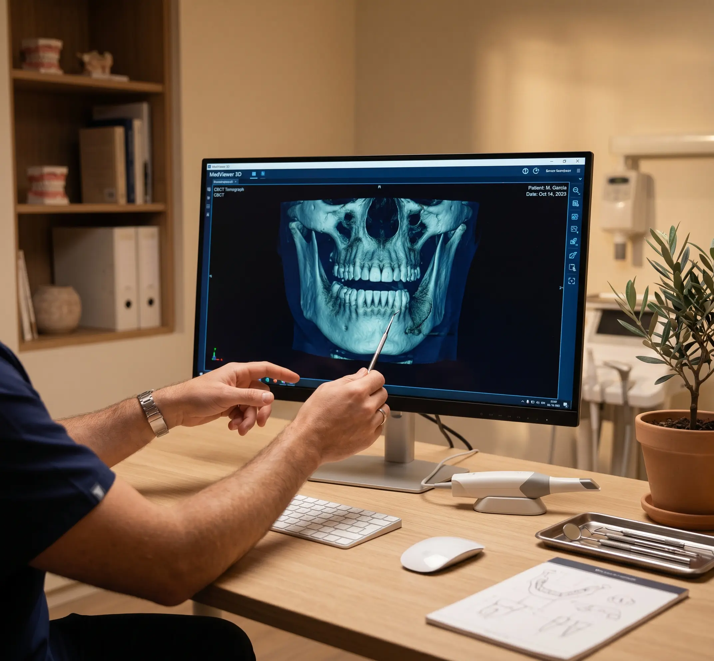

Empastes
Obturaciones de composite del color exacto del diente para tratar caries preservando la máxima estructura dental. Resultado estético e invisible.
Odontología integral para toda la familia en San José de La Rinconada. Desde la revisión más básica hasta la rehabilitación completa de la boca.
Nuestros tratamientos estéticos utilizan las técnicas y materiales más avanzados para conseguir resultados naturales y duraderos, todos fabricados en nuestro laboratorio dental propio.

Cuando hay que actuar, actuamos rápido y con precisión para salvar tu diente y evitar problemas mayores.
Obturaciones de composite del color exacto del diente para tratar caries preservando la máxima estructura dental. Resultado estético e invisible.
Diagnóstico y tratamiento de enfermedades de las encías: gingivitis y periodontitis. El curetaje y el tratamiento periodontal detienen la pérdida de hueso y mantienen tus dientes en boca.
Tratamiento de los conductos radiculares cuando la infección o la caries ha llegado al nervio. Salvamos el diente, eliminamos el dolor y prevenimos la extracción.

La tomografía computarizada de haz cónico (CBCT) nos permite obtener una imagen tridimensional completa de tu mandíbula, maxilar y estructura ósea en cuestión de segundos.
Con esta tecnología, nuestros especialistas planifican los implantes con precisión milimétrica, detectan patologías ocultas y toman decisiones clínicas más seguras, todo sin necesidad de derivarte a un centro externo.
Contamos con laboratorio dental integrado donde fabricamos todas las prótesis: coronas, puentes, prótesis removibles y sobre implantes. Control total del proceso y menor tiempo de espera.
Máxima estética y resistencia. Ideal para dientes posteriores y anteriores.
Reemplaza dientes perdidos anclándose en los dientes adyacentes.
Prótesis parcial o completa. Descuentos especiales para pensionistas.
La solución más estable y funcional para la rehabilitación completa.
Pide tu revisión gratuita. Te haremos un diagnóstico completo y te explicaremos exactamente qué necesitas y cuánto cuesta, sin compromiso.
Revisión gratuita